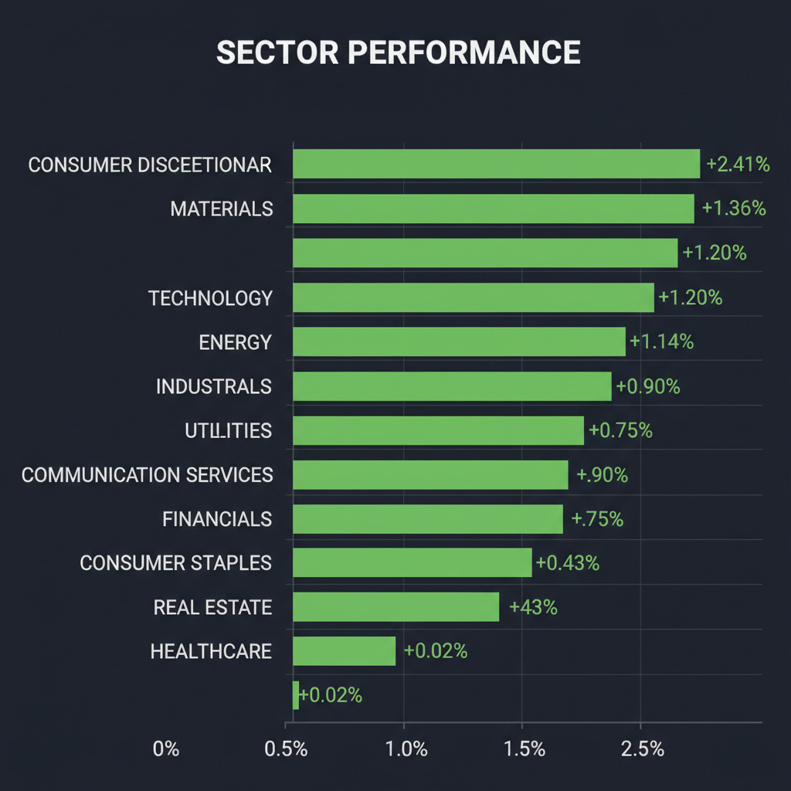
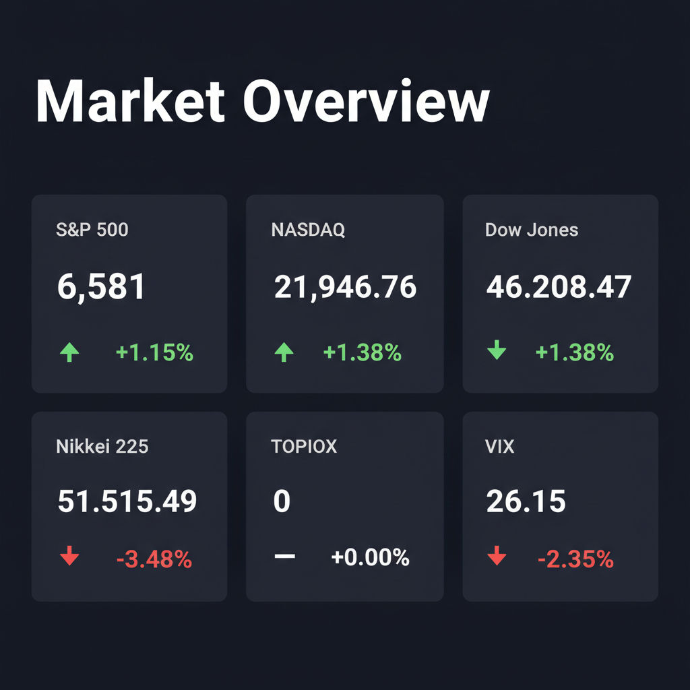

Daily Investment Report - 2026-03-24
Generated: 2026/3/24 8:15:19


投資家向け市場分析・戦略レポート
1. エグゼクティブサマリー
- 米イラン間の地政学リスクとディーゼル価格の40%急騰を背景に、市場はコストプッシュ型インフレの再燃懸念と高ボラティリティ（VIX26超）に見舞われています。
- 足元の株価反発はショートカバー主導の一時的な「ベアマーケット・ラリー（騙し上げ）」の可能性が高く、手放しでリスクオンに傾くのは極めて危険です。
- 現金比率を高めてポートフォリオの防衛を最優先しつつ、価格転嫁力を持つ中小型バリュー株や、強力なカタリストを秘めた銘柄を厳選して押し目を狙う戦略が推奨されます。
2. 注目銘柄リスト
強気（買い推奨）
- 日本特殊陶業（5334） [中大型株]: 内燃機関向け製品で世界トップクラスのシェアを持ち、インフレ下でも強い価格支配力と高い営業利益率を維持。低PER・高配当で下値リスクが限定的な優良バリュー株です。
- コスモスイニシア（8844） [数百億円規模]: アパートメントホテルなどインバウンド需要を的確に捉え好決算を発表。財務基盤が安定しているにもかかわらず、低PBR・低PERで放置されており安全マージンが確保されています。
- South Plains Financial（SPFI） [中小型株]: テキサス州基盤の中小型地銀。BOH Holdingsとの合併承認を完了しており、規模の経済による利益率改善が見込まれます。金利高止まり環境下でも割安に放置された魅力的なバリュー銘柄です。
中立（様子見）
- Banzai International（BNZI） [マイクロキャップ]: 企業買収により年間収益倍増とAI機能拡張を見込む超小型株です。テンバガー（10倍株）候補としての爆発力を秘めていますが、高金利下での統合コスト増大や資金枯渇リスクが懸念されるため、次期決算のガイダンス確認までは様子見を推奨します。
- ANYCOLOR（5032） [中小型株]: 驚異的な営業利益率とキャッシュ創出力を持つ一方、成長鈍化懸念により株価は急落中です。ファンダメンタルズ的には割安ですが、テクニカル面では「落ちてくるナイフ」状態のため、底打ち（反転シグナル）を確認するまでは待機が賢明です。
弱気（警戒）
- 一般消費財関連の低粗利銘柄 [中小型全般]: ディーゼル価格高騰に伴う物流コスト増を消費者に転嫁できず、深刻な利益率の圧迫（マージン・スクイーズ）に直面する可能性が高いため、警戒が必要です。
3. セクター推奨ランキング
原油高およびディーゼル価格の急騰という実体経済の強力な裏付けがあり、インフレ環境下において最も価格転嫁力を持つ防衛的セクターです。
地政学リスク（ホルムズ海峡の海運リスクなど）の不確実性と、通貨価値低下に対する究極の安全資産・ヘッジ先として資金の流入が継続しています。
外部環境のノイズに左右されにくく、コスト増を価格に転嫁できている好決算企業群です。乱高下相場においてポートフォリオの下値抵抗力を高めます。
エネルギーコスト高騰による消費者の購買力低下と、インフレ再燃による「高金利の長期化」の二重苦を直接的に受けるため、アンダーウェイト（保有削減）を推奨します。
4. 今週の注目イベント
- 3月24日：日本オラクル 決算発表（IT・ソフトウェアセクターの需要動向を占う試金石）
- 日程未定：トランプ政権（ライト氏）によるディーゼル市場への供給増加計画の詳細発表
- 随時警戒：中東情勢のヘッドライン（バーレーンによる国連安保理への武力行使提案の動向、およびイラン指導体制の変化）
5. リスク要因
- 遅行性のインフレショックと高金利の長期化：ディーゼル価格の40%急騰が数ヶ月後のCPI（消費者物価指数）を押し上げ、中央銀行の利下げシナリオを完全に後退させるスタグフレーションのリスク。
- ホルムズ海峡の物理的封鎖リスク：中東の地政学リスクが制御不能となり、原油価格が異常なスパイクを引き起こす「ブラックスワン」の発生。
- アルゴリズム主導の暴落リスク：VIXが26を超える高ボラティリティ環境下では、些細なニュースで流動性が枯渇し、テクニカルなサポートラインを一気に割り込む連鎖的な売りが発生する危険性。
- 労働市場の構造変化によるコスト増：「リバース・リクルーター」の台頭など、人材採用コストの高騰が企業のボトムライン（純利益）を静かに圧迫するリスク。
6. アクションアイテム
- ポジションサイズの半減と現金比率の引き上げ：株式へのエクスポージャーを通常時の半分以下に落とし、不測の事態に備えてキャッシュポジションを大幅に高めてください。
- 脆弱なセクターの利益確定・損切り：本日のような一般消費財セクターの一時的な反発（ラリー）に飛びつかず、絶好のポジション縮小（売り）の機会として活用してください。
- 厳格なストップロスの設定：保有しているすべてのポジションに対して、直近最安値の少し下に明確なストップロス（逆指値）を設定し、日々のノイズによる致命的な損失を回避してください。
- 新規エントリーは確認後に実行：エネルギー株や好決算バリュー株（日本特殊陶業など）を狙う場合でも、初動の高値づかみを避け、テクニカルな押し目（サポートラインでの反発）を確認してから順張りでエントリーしてください。